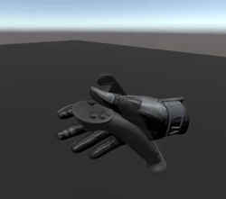
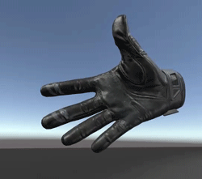

Skeleton Input
Seeing your physical controllers in VR is nice but what people really want is to be able to see their hands. As VR controllers advance we're seeing wildly different capabilities. Some controllers only get button presses (no touch), some give good finger estimates even mid-air, and we're starting to see gloves and cameras that have full per joint position/rotation tracking. SteamVR Skeleton Input gives you one API to get per joint data for all of these different types of devices. For devices with less data we estimate finger positions based on what buttons are being pressed while with more advanced controllers the data is just passed through.
Range Of Motion
We have two ranges of motion that you can get bone data for. If you're looking for accurate-to-real-world data you can use the WithController range of motion. This means we try and estimate where your fingers are in the real world as best as the controller will allow. WithoutController gives you a full range from a flat hand with fingers spread out to a balled fist.
 
Skeletal Transform Space
Depending on what your use case is for this data you may want to get the positions and rotations relative to different things. By default we get positions and rotations relative to their Parent. But you can also get them relative to the Model.
Finger Curls
For some things it may be more useful to access a summary of how curled the finger is as opposed to the position and rotation for 4 joints on each finger. These values range from 0 to 1, with 1 being fully curled. You can access curl information at skeletonAction.fingerCurls[] as an array, or individually named at skeletonAction.indexCurl, skeletonAction.middleCurl, skeletonAction.RingCurl, skeletonAction.pinkyCurl, and skeletonAction.thumbCurl.
Finger Splays
Knowing the gaps between fingers can also be a commonly used piece of information. For this we provide data in a similar fashion to the curls. A range from 0 to 1 representing the size of the gap between fingers. skeletonAction.fingerSplays[] as an array, or individually named as skeletonAction.thumbIndexSplay, indexMiddleSplay, middleRingSplay, and ringPinkySplay.
Skeletal Tracking Level
Different controllers have different abilities to track the individual joints of your fingers. Here we provide an overview value that should give you a general idea what level of fidelity your current controller has.
- Estimated: Body part location can’t be directly determined by the device. Any skeletal pose provided by the device is estimated based on the active buttons, triggers, joysticks, or other input sensors. Examples include the Vive Controller and gamepads.
- Partial: Body part location can be measured directly but with fewer degrees of freedom than the actual body part.Certain body part positions may be unmeasured by the device and estimated from other input data.Examples include Knuckles or gloves that only measure finger curl
- Full: Body part location can be measured directly throughout the entire range of motion of the body part.Examples include hi-end mocap systems, or gloves that measure the rotation of each finger segment.
SteamVR_Behaviour_Skeleton
The skeleton behaviour is a component to make common Skeleton Input tasks easier in unity. By setting the skeletonAction and inputSource you can then let the behaviour do a lot of work for you.
updatePose- Setting this to true will orient the GameObject in your playspace every time the skeleton is updated.mirroring- If this bone data should be mirrored across the x axis.SetRangeOfMotion(EVRSkeletalMotionRange newRangeOfMotion, float blendOverSeconds = 0.1f)- Gives you an easy way to blend to a new range of motion.BlendToSkeleton(float overTime = 0.1f)- Fully blend to using the skeleton data to animate the bones.BlendToPoser(SteamVR_Skeleton_Poser poser, float overTime = 0.1f)- Fully blend to using the Poser to animate the bones.BlendToAnimation(float overTime = 0.1f)- Fully blend to a predefined Unity animation.BlendTo(float blendToAmount, float overTime)- Lets you specify how much to blend between poser/animation data and skeleton input data.Transform GetBone(int joint)- Returns a specific bone's Transform by the joint index (SteamVR_Skeleton_JointIndexes).ForceToReferencePose(EVRSkeletalReferencePose referencePose)- Forced the bones to a specific reference pose as defined by SteamVR. Generally used for debugging purposes.Vector3[] GetBonePositions()- Gives you an array of all the bone positions in the space you requested.Quaternion[] GetBoneRotations()Gives you an array of all the bone rotations in the space you requested.
SteamVR_Behaviour_Skeleton Events
There's five helpful events on the skeleton behaviour that have two forms. You can subscribe to the unity event or the more traditional C# event. The benefit of the C# events is most IDEs will automatically create a function with named parameters for you based on the event type.
onBoneTransformsUpdated- After the bone transforms have been updated this will fire.onTransformUpdated- After the root transform has been updated this will fire.onTransformChanged- After the root transform has been changed this will fire (moved / rotated).onConnectedChanged- Whenever a device is connected or disconnected from this actiononTrackingChanged- Executes whenever the state of the tracking for this device changes.